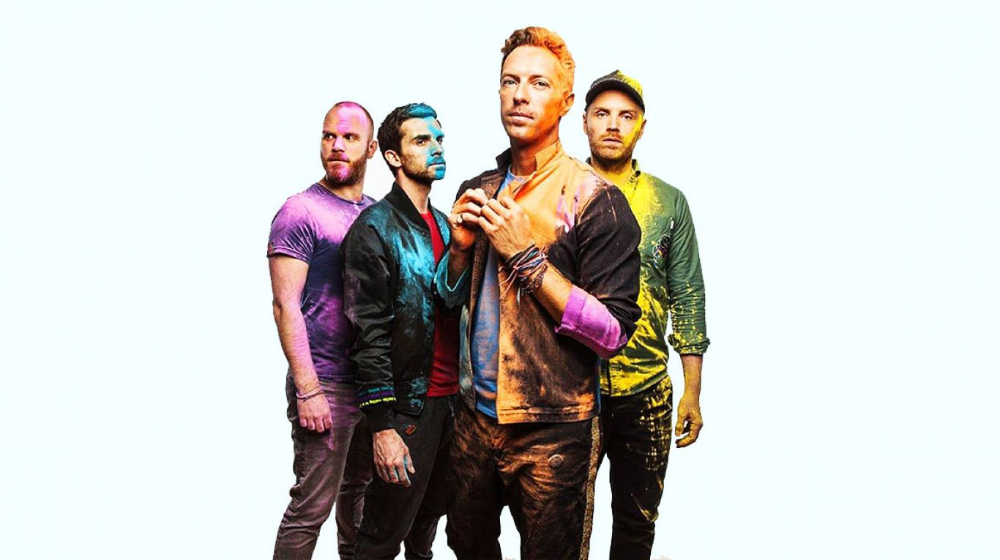

Historia
Chris Martin y Jonny Buckland se conocieron durante su semana de orientación en la Universidad de Londres en septiembre de 1996, y estuvieron tratando de formar una banda durante su estancia en la universidad, llegando finalmente a formar un grupo llamado Pectoralz. Posteriormente Guy Berryman, compañero de clase de los dos, se unió al grupo. En 1997, registraron juntos legalmente un demo llamado "Don't Panic" bajo el nombre Big Fat Noises, durante sus vacaciones universitarias. Martin también invitó a su viejo amigo de la escuela Phil Harvey, estudiante de Oxford, para que fuera el mánager de la banda. Desde entonces, Harvey es el quinto miembro de Coldplay. Sin embargo, la formación original fue completada con Will Champion en julio de 1997, encargado de la percusión. Chris y Will ya se habían conocido antes en un autobús de camino a un juego de hockey de la universidad, donde descubrieron que ambos tocaban la guitarra e hicieron juntos varias versiones de canciones en Covent Garden. Champion se había criado tocando el piano, la guitarra, el bajo y el tin whistle, pero aprendió a tocar la batería sin mucho esfuerzo y sin experiencia previa. La banda, renombrada Starfish en un apuro de Will al no tener un nombre que les estaba pidiendo el organizador de un club, comenzaron finalmente a tocar juntos en varios clubes con un público que aumentaba conforme pasaba cada presentación. Durante esta época ya habían formado amistad con varias personas que habían conocido en la residencia estudiantil Ramsay Hall donde pasaron 4 años hospedándose por sus estudios. Entre ellos estaban Kris Foof, Gavin Aherne, James “Pix” Pickering, John Hilton y Mat Whitecross, que sería el futuro director de varios de sus vídeos musicales y películas.
El cuarteto usó el nuevo piso que habían rentado Chris y Jonny en la calle Candem 268 de Londres como lugar para sus constantes ensayos. La banda adoptó finalmente el nombre The Coldplay tomándolo prestado con permiso de Tim Crompton, que había usado dicho nombre para su propia banda. En 1997, Martin conoció a Tim Rice-Oxley. Durante un fin de semana en Virginia Water, cada uno pidió al otro tocar sus canciones en el piano. Martin, viendo que Rice-Oxley tenía talento, le pidió que fuera el teclista de Coldplay, pero este se negó pues ya tenía su propia banda, Keane.
En 1998, la banda lanzó quinientas copias del EP Safety. Muchos discos fueron entregados a compañías discográficas y a amigos y familiares, por lo que sólo cincuenta copias quedaron disponibles para la venta. En diciembre de ese año, Coldplay firmó un contrato de grabación con la compañía independiente Fierce Panda. Su primer lanzamiento fue el EP Brothers & Sisters, que fue grabado en sólo cuatro días en febrero de 1999. Tras terminar sus exámenes finales, Coldplay firmó un contrato de cinco álbumes con Parlophone en la primavera de 1999. Después de hacer su primera aparición en Glastonbury, la banda volvió al estudio, esta vez para grabar un EP titulado The Blue Room. Cinco mil copias fueron puestas al alcance del público en octubre, y el sencillo Bigger Stronger fue transmitido por la BBC. Las sesiones de grabación para The Blue Room fueron muy agitadas. Martin expulsó a Champion de la banda, pero luego le rogó que volviera, y por su culpa, se puso ebrio. Eventualmente, el grupo pudo limar las asperezas y establecieron un reglamento. Basados en bandas como U2 y R.E.M., Coldplay sería una democracia, y acordaron que los ingresos serían repartidos en igual medida. Adicionalmente, pactaron que expulsarían a cualquier miembro que llegara a consumir drogas duras. En marzo de 1999, Coldplay empezó a trabajar en su álbum debut, grabado en Rockfield Studios con el productor Ken Nelson. También tocaron en el Carling Tour, donde actuaron como teloneros. Después, pudo realizar su primera gira, que incluyó una actuación en el Festival Glastonbury. También fue lanzado su famoso sencillo Yellow, que alcanzó en esas mismas listas el puesto número cuatro e hizo que Coldplay se incorporara a la cultura popular.
Finalmente, Parachutes fue sacado a la venta en julio de 2000, y se situó en el primer puesto de las listas de venta inglesas. Yellow y Trouble ganaron popularidad al ser transmitidas por radio con más frecuencia en Estados Unidos e Inglaterra. El álbum fue nominado a los Premios Mercury en septiembre de 2000.
Habiendo tenido éxito en Europa, la banda decidió ampliar sus horizontes en Estados Unidos, y lanzaron Parachutes allí en noviembre de 2000. Pese a que no fue un éxito inmediato, el álbum ganó un doble disco de platino. Este disco fue excelentemente recibido y ganó el Grammy al Mejor Álbum de rock alternativo en 2002.
Integrantes
- Chris Martin: Vocalista principal, guitarra rítmica, piano, teclado. Armónica (en algunas ocasiones).
- Jonny Buckland: Guitarra principal, voz secundaria. Teclados, piano, pandereta y voz principal (en algunas ocasiones).
- Will Champion: Batería, percusión, voz secundaria. Guitarra, piano, teclado y cantante principal (en algunas canciones).
- Guy Berryman: Bajo, voz secundaria, armónica. Teclados, mandolina y armónica (en algunas ocasiones).
Estilo musical
En el comienzo de su carrera, el estilo musical de Coldplay fue definido como el oscuro sonido del rock alternativo, principalmente perceptible en sus primeros EP Safety, The Blue Room y su primer álbum de estudio Parachutes; siendo comparado con el de Radiohead, U2, Travis y Oasis. Sin embargo, con el pasar del tiempo, evolucionaron a un estilo pop y suave. El cantante y compositor del grupo, Chris Martin, describió en una ocasión la música del grupo como rock suave. La música de esta banda fue calificada como meditativa, romántica y que refleja sus emociones.
El estilo de su primer álbum fue descrito como pop melódico con riffs distorsionados y percusión silbante. También fue descrito como exquisitamente oscuro y artísticamente abrasador. En una crítica de A Rush of Blood to the Head, se dijo que las canciones tenían exuberantes melodías y mostraban un corazón roto, y que existía una nueva clase de confianza adquirida. La música de X&Y, según la crítica refleja las dudas, los miedos, las esperanzas y los amores de Martin. La banda reconoce a Travis como su mayor influencia.
Por otra parte, el estilo musical de su álbum Viva la Vida or Death and All His Friends, según la crítica de Allmusic, se ve influido por Peter Gabriel, U2 y Brian Eno, quien los incita a experimentar más con el sonido. El sonido acústico, característico de Coldplay, se ve reemplazado por otro más rico y con mayor cantidad de elementos: órgano, sintetizadores y orquestas enteras.